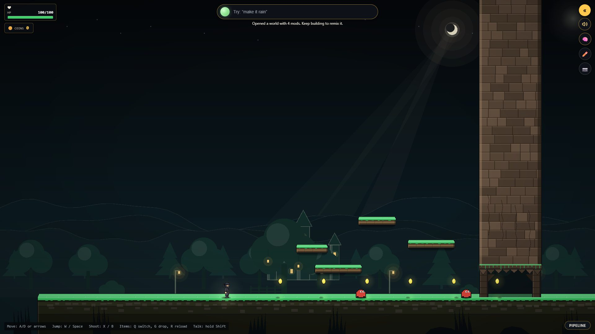
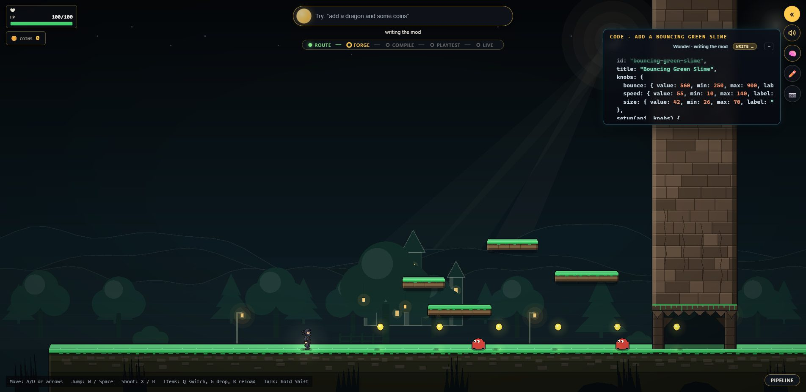
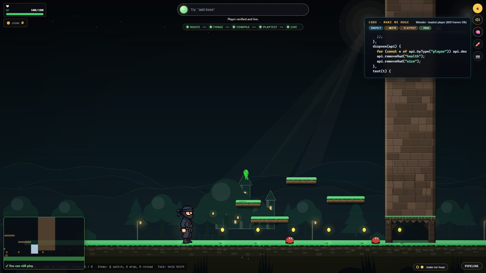
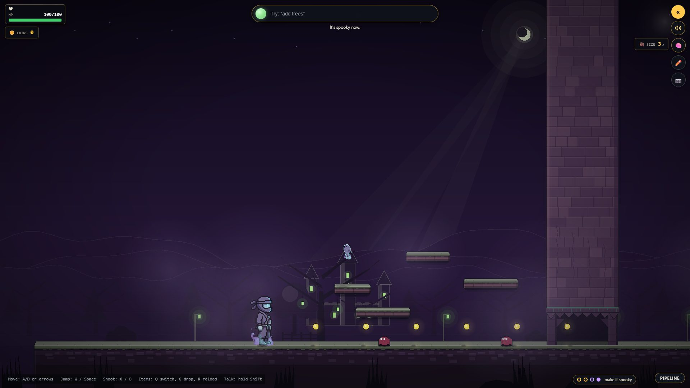
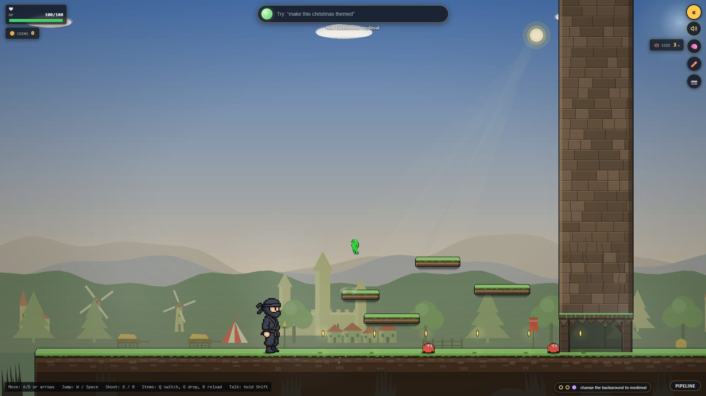
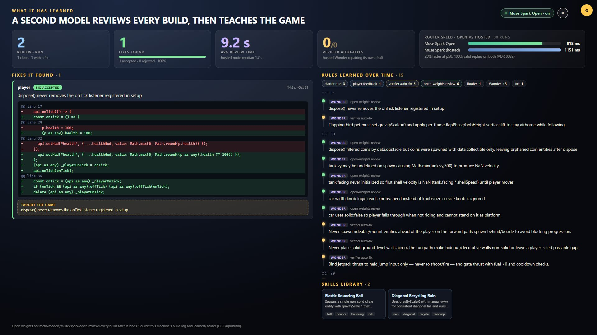
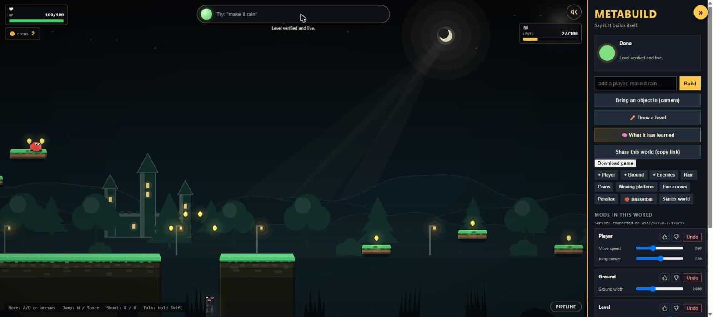
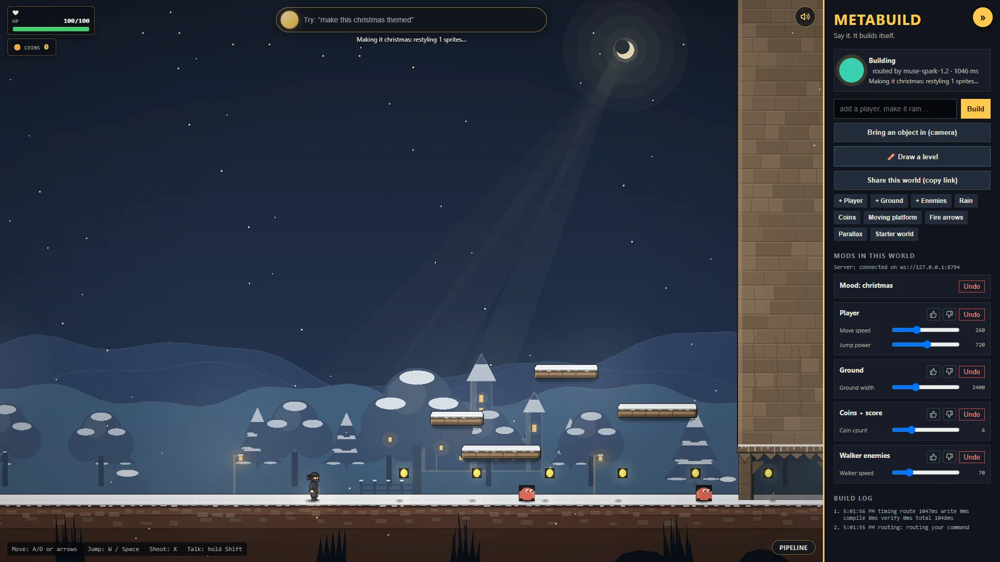
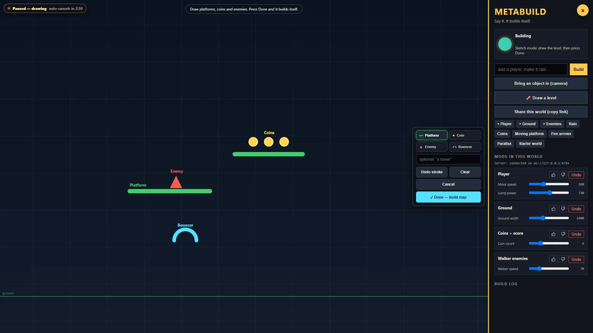
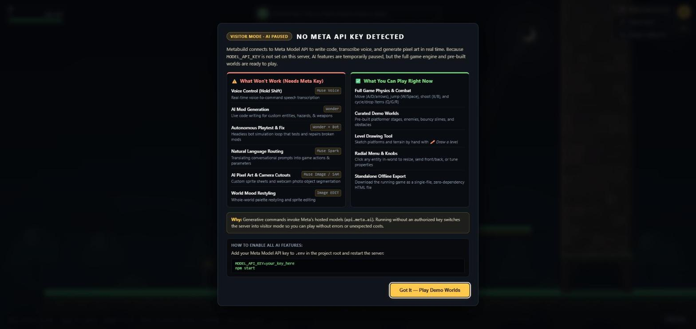

Game making takes years. What if it took a sentence?
One sentence becomes logic, a test, art and a playable asset, and an agent proves it works before it goes live. Talk-to-Build. A pixel-art side scroller that rebuilds itself while you play. Solo entry, Indie track, Meta Global AI Developer Hackathon 2026.
Say it
You start with an almost empty world. You talk to it, and it builds itself around you while you keep playing.
Type it, or hold Shift and say it. The game never pauses.Starter world, built by talking. Every thing on screen is a mod.
Muse Wonder writes the code while you watch, and the strip under the orb tracks it: route, forge, compile, playtest, live.Live capture from this build, 10-31.
Before anything loads, a bot plays a copy of your world with the new mod. Green means you can still play.The ghost window replays the bot's actual run.
One sentence restyles the whole world. Spark designs the mood, then Muse Image redraws every sprite in it.Palette in about a second; sprite redraw follows.
Place backdrops swap in under a second, with no model call at all. "undo" brings any of it back.Medieval: castle, village, windmills, tents.




The loop
Talk, build, verify, hot-load. Nothing reaches your game until it has passed.
Voice in. Muse Voice Transcribe streams partial words while you talk; the final text lands about 130 ms after you let go of Shift.
Route. Muse Spark decides in about a second: a new thing, a knob tweak, an edit, undo, a mood or a question. Named, deterministic route rules check its answer.
Write. Muse Wonder writes a mod against a small engine API, and writes the mod's own test() with it.
Compile. A forbidden-token scan (no eval, fetch, document, process.…), then esbuild turns the TypeScript into a module. A few milliseconds.
Verify. 600 headless frames on the deterministic 60 Hz sim, then a bot plays a copy of your world with and without the mod, on three seeds.
Hot-load. The module drops into the running game with its knobs as sliders. No reload. Words to playable: median 11.2 s.
Now ask for something that breaks the level: "make me huge". The playtest bot can't get through, so the change is rejected with a reason, and your game doesn't change.
The reason goes back to Muse Wonder. As a tool-calling agent it inspects the world, rewrites its draft, and runs the playtest itself until it passes.
Fixed, verified, live. In the 20-run rehearsal, "make me huge" was rejected and then fixed 20 times out of 20.

Which Meta model does which job
Six Meta models with real jobs at runtime, plus Wonder's agent features.
Muse Voice Transcribemuse-voice-transcribe-1.0
Hold Shift and talk. Live partials appear under the orb; audio goes through our server, so the key never reaches the browser.
~130 ms after releaseMuse Sparkmuse-spark-1.2
Routes every command, picks each thing's visual kind, splits compound asks, art-directs moods, explains code.
~1 s per commandMuse Wondermuse-wonder-1.0
Writes and edits mods. As a tool-calling agent (inspect_world, run_playtest) it fixes what the verifier rejected. Compound asks build in parallel, up to 4 at once.
Muse Imagemuse-image-1.0
Draws sprite sheets on demand, and redraws the world in a new mood by editing from an anchor image.
~17 s, in the backgroundSAM 3.1sam-3.1
Finds the real object you hold up to the webcam, so it can be cut out, pixelated and dropped in as a physics prop.
~1.2 sMuse Spark Open open weightsmeta-models/muse-spark-open, on Baseten
Optional router (918 ms vs 1151 ms p50 for hosted Spark over 30 runs), and a background reviewer that fixes finished builds and writes learned rules.
with BASETEN_API_KEYMeta's open-weights model, served by Baseten, does real work in the product. The open-weights bonus is in the loop, not a side demo.
Every AI call the game makes at runtime goes to a Meta model. No other AI provider, anywhere in the product.
A mod, up close
Everything visible in the game is a mod. This is real Wonder output for "add a bouncing green slime", from the build log.
"make me huge": the draft, then the fix
Wonder's first draft was rejected. Its fix keeps the player big, caps the height, and adds a check that the player still fits through the gap. Real lines from the build log, 10-29.
- scale: { value: 3.5, min: 1, max: 6, label: "Huge size scale" }+ scale: { value: 2.5, min: 1, max: 2.6, label: "Huge size scale" }+ p.h = Math.min(90, Math.round(34 * scale));- t.expect(p.w >= 78 && p.h >= 102, "player is huge");+ t.expect(p.w >= 60 && p.h >= 80, "player is huge");+ t.expect(p.h < 100, "player fits through 100px gap");+ t.expect(p.x > 120, "player moves right at normal speed");One file, four parts
Knobs, setup(), dispose() and test(). That is the whole contract between the AI and the engine.
Line breaks added for the slide; the code is otherwise as Wonder wrote it.
knobs
Every number worth changing is a knob. Each one becomes a slider on the mod's card, so "bouncier" is a knob tweak, not a rebuild.
setup(api, knobs)
Only the mod API: spawn, onTick, rand, burst. No DOM, no network, no clock, no Math.random. The engine's seeded RNG keeps every run reproducible.
dispose(api)
Removes everything the mod made. That is why undo is always clean: undo just calls dispose().
test(t)
Wonder's own check. It spawns its own ground because the verifier runs each mod alone in an empty world, then steps the sim and asserts.
- Safety scan. Forbidden tokens (
eval,Function(,fetch,window,process.…) are rejected, and every loop gets an iteration guard. - esbuild compiles the TypeScript to a module.
- 600 headless frames at a fixed 60 Hz step. Fails on an exception, NaN, too many entities, a frame over 2 ms, or a failing
test(). - Bot playtest in a copy of your world, with and without the mod, on seeds 11, 22 and 33.
- Hot-load from a blob URL into the running sim. The knobs appear as sliders.
It learns
A second model reviews every build, then teaches the game.
After a build lands, Muse Spark Open, Meta's open-weights model on Baseten, reads the code in the background. You never wait for it.
The 🧠 panel in the game shows every review, fix and rule.
Here it caught a real bug: the player mod's dispose() never removed its onTick listener.
Reviewed on 10-31, during this capture. Fix accepted in 14.6 s.
A fix goes live only if it passes the same gates as any build: compile, 600-frame verify and the bot playtest. Otherwise the original stays.
Then it is hot-swapped in place under the same mod id, so undo still works.
Every accepted fix becomes a rule that every later Wonder build reads. 39 rules and skills were learned in the logged window.
- review dispose() filtered coins by data.obstacle but coins were spawned with data.collectible only
- autofix Never place solid ground-level walls across the run path
- feedback Rain drops must fall with a wind-driven slant and splash on impact

Not just a game
The product is the loop: words in, verified software out, changed while it runs. A game is where you can watch it work.




Hold up a real mug. SAM 3.1 finds it, and it drops in as a physics prop.
One item at a time: Q switches, G drops, R reloads, vehicles run over hostiles.
A link reopens your exact world to remix. One HTML file plays offline.
Does it work?
Numbers from the game's own append-only build log, 10-28 to 10-30. Nothing hand-picked.
of player requests landed verified and hot-loaded: 162 of 175.
median from a sentence to a playable change (p90 26.9 s).
landed on the first try
saved by the auto-fix round
tests
decision records
"make me huge" rejected, then fixed
Source: docs/evidence/build-stats.md (regenerate with npm run stats), docs/process/rehearsal-20x.md, docs/adr/.
Run it
Node 22+ and five minutes. A Meta Model API key lets the AI build; without one it still plays.
Open http://127.0.0.1:8787/, click the game, and type add a bouncing green slime.
Without a key, it still runs.
Built-in mods, drawing a level, the 🧠 panel, share and download, and four curated demo worlds, with no AI calls:
?w=demo-starter?w=demo-bouncy?w=demo-arrows?w=demo-rainy

Software that rewrites itself while you use it, and proves every change before it ships.